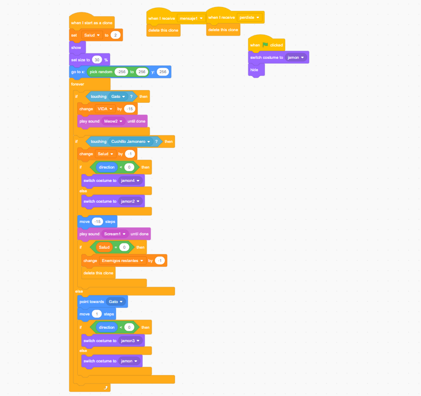
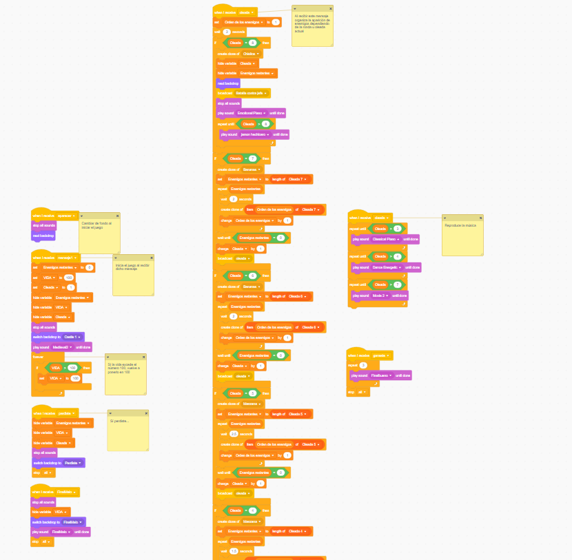
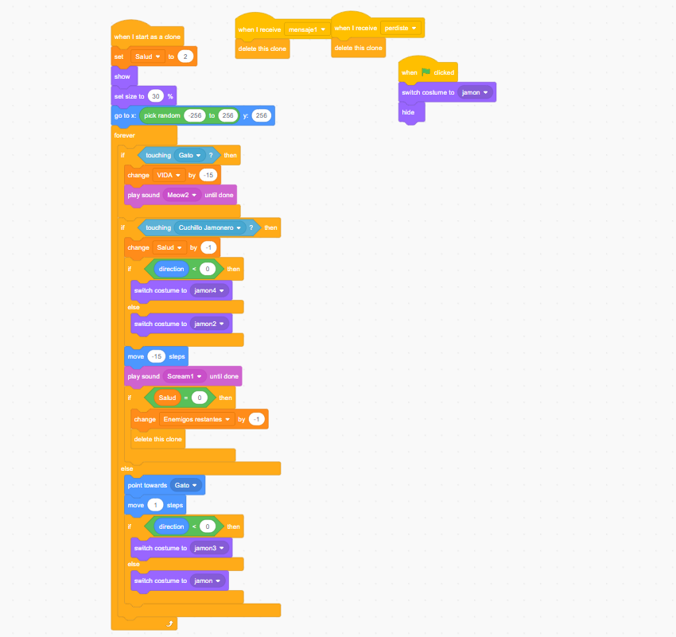
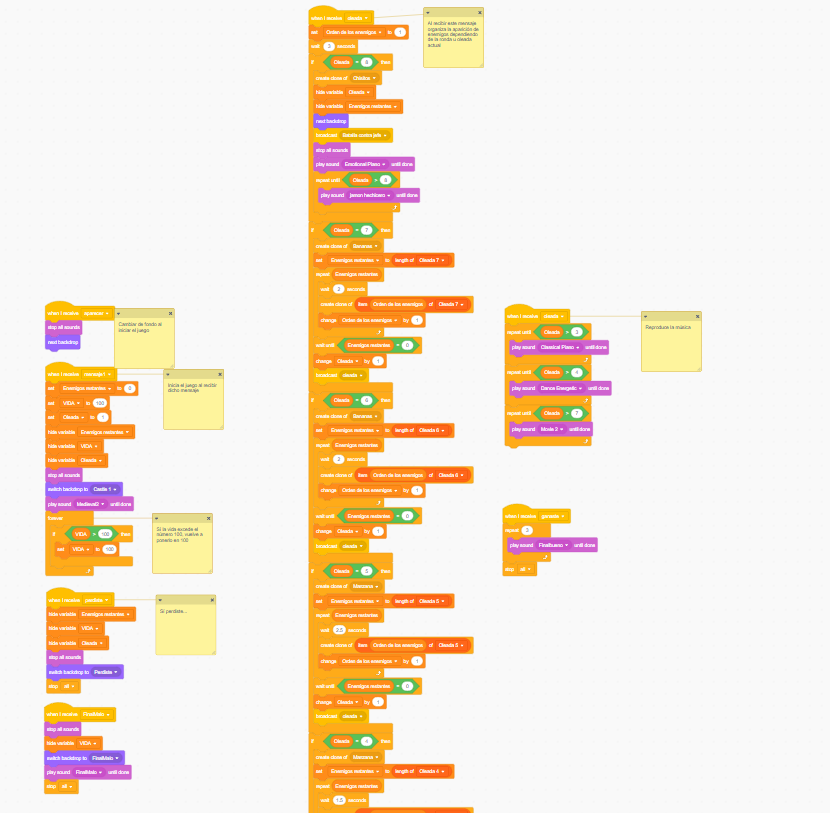

Sos el cocinero real del castillo, también fuiste un antiguo guerrero legendario, pero hoy en dia solo te dedicás
a cocinar platos y a satisfacer a la familia real. Extrañando tus días de gloria, recibis la noticia de una
invasión de jamones mutantes que pretenden instaurar el jamón con ananá como la mejor combinación de comidas,
entonces te armás con tu confiable cuchillo jamonero y...
¡VAS A REBANAR JAMONES!
¿Qué es Jamón?
Jamón es un videojuego de acción en el que protagonizás a un
gato que podés mover por la pantalla con las flechas del teclado o WASD, saltar con espacio y mover el
cuchillo con el mouse, para rebanar a los jamones tenés que hacer que toquen el cuchillo jamonero.
Los jamones van a venir en un sistema de oleadas, una después de la otra, una más difícil que la anterior,
tu tarea es la de rebanar a todos los jamones que vengan y que detengas la invasión de los jamones mutantes.
Cada cierta cantidad de oleadas hay una sorpresa para el jugador en forma de oleadas más duras o de
enfrentamientos inesperados. A lo largo del camino van a aparecer diferentes tipos de jamones a los que
el jugador se debe enfrentar para avanzar. También cuando el jugador logra salir del castillo va a poder
obtener un potenciador con forma de globo que va a hacer al gato inmune a proyectiles que provengan de
los jamones. Podés jugar Jamón desde esta misma página web o desde su página en Scratch: Jugar desde Scratch
Integrantes del grupo
Florencia Juárez
Santiago Silva
Matías Nahuel González Sandoval
¿Cómo se hizo Jamón?
Jamón se creó y desarrolló en el trascurso de dos semanas, toda su estética se basó en la idea de que sería
gracioso hacer un videojuego sobre jamones y ananá, pero también porque el jamón es rico. El gato cocinero
surgió en base a eso y también de que el gato de Scratch se veía gracioso con un gorro de chef y sosteniendo
un cuchillo jamonero hiperrealista.
Muchas cosas ocurrieron en las dos semanas de desarrollo, muchas de ellas se detallan en el documento de
Jamón, tenga en cuenta que dicho documento presenta spoilers del videojuego.
Descargar Documento de Jamón
 Jamón es un videojuego de acción en el que protagonizás a un
gato que podés mover por la pantalla con las flechas del teclado o WASD, saltar con espacio y mover el
cuchillo con el mouse, para rebanar a los jamones tenés que hacer que toquen el cuchillo jamonero.
Jamón es un videojuego de acción en el que protagonizás a un
gato que podés mover por la pantalla con las flechas del teclado o WASD, saltar con espacio y mover el
cuchillo con el mouse, para rebanar a los jamones tenés que hacer que toquen el cuchillo jamonero.
 
